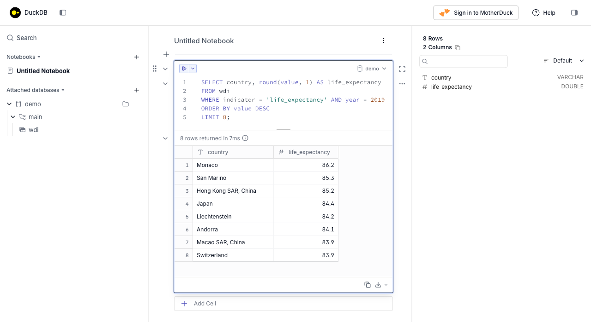

import duckdb
print(duckdb.__version__)1.5.5Danilo Freire
SQL is no longer taught in the lectures of DATASCI 350. Module 06 now covers getting data from the web, and DATASCI 151 already introduces the basics of SQL. This self-study tutorial keeps the SQL material available for you. Read it if you want to add a widely used skill to your toolkit, or if you meet SQL in a job and want a reference written for this course.
The tutorial is self-contained. You will install one Python package, run every query yourself, and finish able to read and write the SQL you are most likely to see in a data science role. All the code here executes when the document is rendered, so every output you read below is real.
We use DuckDB as the engine. If you have met SQL before, it was probably through SQLite. DuckDB is a better fit for data science, and the reasons are worth a short section of their own.
SQL (Structured Query Language) is the common language of databases. You write a description of the data you want, and the database engine works out how to fetch it. The same language, with small dialect differences, drives SQLite on your laptop, PostgreSQL on a server, and BigQuery in the cloud. Learn it once and you can query almost any tabular data store you meet.
Two features make it worth your time. First, SQL is declarative: you say what you want, not how to compute it, so a short query can replace a long loop. Second, SQL is everywhere in data work. Analyst and data-scientist job adverts list it more often than any single Python library.
DuckDB is an SQL engine built for analytics. Three properties make it the right choice for this course:
pip install duckdb and you have a working database.You met DuckDB once already. Lecture 22 uses it, alongside Polars, as a tool for processing data at scale. This tutorial fills in the SQL underneath that lecture.
You install DuckDB the same way you install any Python package. The instructions below assume you have a working Python environment from earlier in the course.
Install the package first.
The tutorial also uses pandas and Polars in the final section. Install them too if they are missing.
Now verify the installation. Open Python. Run the two lines below. The version number appears.
You now have a working SQL engine. No server runs in the background. The engine is a library that your Python process loads.
You can also use DuckDB outside Python, in a terminal. The command-line tool is a separate download. It is optional for this tutorial, so skip this section if you only want the Python interface.
To install the command-line tool, visit the DuckDB installation page. Follow the instructions for your operating system. To start it, type duckdb in a terminal. To leave it, type .quit.
The tool also has a browser interface. Start it with duckdb -ui. A local page opens where you can type SQL in a notebook cell and read the result as a table, as in the figure below. Everything in this tutorial works the same way, whether you type it in Python or in the command-line tool.

A DuckDB database is either a file on disk or a temporary space in memory. You choose when you connect.
An in-memory database exists only while your program runs. It is fast and leaves nothing behind, which is ideal for learning and for one-off analysis. Connect with no argument.
A file-backed database saves your tables to disk, so they survive after the program ends. Pass a filename to keep your work.
The only difference is the argument. Everything else in this tutorial works the same either way. We use an in-memory connection so the tutorial leaves no files behind.
You run a query with con.sql(). The result is a DuckDB relation. Add .df() to turn it into a pandas DataFrame, which prints as a familiar table.
We use .df() throughout so every result prints clearly. The last section shows the other ways to collect a result.
A relational database stores data in tables. A table is a grid of rows and columns, like a single spreadsheet. Each column has a fixed data type, so a column of whole numbers cannot suddenly hold text. Each row is one record.
Two ideas connect tables to each other:
driver_id that is different for every driver is a primary key.orders table says which customer placed the order. Foreign keys are how relational databases avoid repeating the same information in many places.DuckDB’s core data types are few and predictable:
INTEGER holds whole numbers.DOUBLE holds decimal numbers.VARCHAR holds text of any length.BOOLEAN holds true or false.DATE and TIMESTAMP hold calendar dates and times.NULL is not a type but a marker for a missing value. Any column can hold it.You create a table with CREATE TABLE. You list each column and its type. Marking a column PRIMARY KEY tells DuckDB the values must be unique and present.
We build a small table of Formula 1 drivers, small enough to check by eye.
Notice two conventions. SQL keywords are written in capitals, which separates them from your own column names. Each statement ends with a semicolon, which marks where one command stops and the next begins.
You add rows with INSERT INTO. List the values for each row in the same order as the columns. Python’s None becomes SQL’s NULL, which is how we record that we do not know a driver’s nationality or win count.
con.execute("""
INSERT INTO drivers VALUES
(1, 'Lewis Hamilton', 'Mercedes', 'British', 103),
(2, 'Max Verstappen', 'Red Bull Racing', 'Dutch', 55),
(3, 'Fernando Alonso', 'Aston Martin', NULL, NULL),
(4, 'Charles Leclerc', 'Ferrari', 'Monégasque', NULL),
(5, 'Valtteri Bottas', 'Mercedes', 'Finnish', 10),
(6, 'Sergio Pérez', 'Red Bull Racing', 'Mexican', 5),
(7, 'Lando Norris', 'McLaren', 'British', 4),
(8, 'Esteban Ocon', 'Alpine', 'French', 1);
""")
con.sql("SELECT * FROM drivers").df() driver_id driver_name team nationality victories
0 1 Lewis Hamilton Mercedes British 103
1 2 Max Verstappen Red Bull Racing Dutch 55
2 3 Fernando Alonso Aston Martin NaN <NA>
3 4 Charles Leclerc Ferrari Monégasque <NA>
4 5 Valtteri Bottas Mercedes Finnish 10
5 6 Sergio Pérez Red Bull Racing Mexican 5
6 7 Lando Norris McLaren British 4
7 8 Esteban Ocon Alpine French 1The SELECT * FROM drivers at the end reads every column (*) and every row back. SELECT is the command you will use most. It extracts data without changing it.
Real tables change over time. A few commands cover most needs. Read the warning before you use DROP TABLE.
ALTER TABLE drivers ADD COLUMN points INTEGER;ALTER TABLE drivers DROP COLUMN points;DELETE FROM drivers WHERE victories = 0;Warning: DROP TABLE deletes the table and all its data at once. The action cannot be undone. Use it only when you are certain.
DROP TABLE drivers;We keep the drivers table, so we do not run those here.
This is where DuckDB pulls ahead of a traditional database. You do not have to load a file into a table before you query it. You point a query straight at the file.
We use the course’s World Bank data throughout the rest of the tutorial. It is the same dataset the final project pulls from the World Bank API, so the queries you practise here transfer directly.
The file data/wdi_panel.parquet ships with the tutorial. Copy it next to your own script first.
Copy the file wdi_panel.parquet into a folder named data beside your script. Confirm the path data/wdi_panel.parquet exists.
The data is in long format. Each row is one country, one indicator, and one year. Read five rows to see the shape.
country iso3 indicator year value
0 Aruba ABW co2_per_capita 1990 3.203034
1 Aruba ABW co2_per_capita 1991 3.435717
2 Aruba ABW co2_per_capita 1992 3.634519
3 Aruba ABW co2_per_capita 1993 3.414535
4 Aruba ABW co2_per_capita 1994 3.683227The quoted filename stands in for a table name. DuckDB opens the Parquet file, reads it, and treats it as a table for the length of the query.
Two commands describe a dataset before you query it. DESCRIBE lists the columns and their types.
column_name column_type null key default extra
0 country VARCHAR YES None None None
1 iso3 VARCHAR YES None None None
2 indicator VARCHAR YES None None None
3 year SMALLINT YES None None None
4 value DOUBLE YES None None NoneSUMMARIZE goes further. It reports counts, ranges, and the share of missing values per column, which is a fast way to learn a new dataset.
column_name min max count null_percentage
0 country Afghanistan Zimbabwe 59024 0.00
1 indicator co2_per_capita urban_pop_pct 59024 0.00
2 year 1990 2023 59024 0.00
3 value 0.0 1438069596.0 59024 11.06Typing the filename in every query is tedious. Register the file once as a view, a saved query that behaves like a table. From here on we write FROM wdi.
rows countries
0 59024 217Which indicators does the dataset contain? A quick query answers it.
Every SQL query is built from a few clauses in a fixed order. You select columns, filter rows, group them, and sort the result. This section covers each clause on both the small drivers table and the real World Bank data.
SELECT chooses columns. WHERE keeps only the rows that meet a condition.
driver_name team victories
0 Lewis Hamilton Mercedes 103
1 Max Verstappen Red Bull Racing 55Combine conditions with AND and OR. Parentheses make the logic explicit.
driver_name nationality victories
0 Lewis Hamilton British 103On the World Bank data, the same clauses pull one indicator for one year. ORDER BY sorts the result, and DESC sorts from high to low. LIMIT keeps only the first rows.
country gdp_per_capita
0 Monaco 161263.0
1 Luxembourg 105274.0
2 Bermuda 98846.0
3 Isle of Man 86595.0
4 Switzerland 86294.0
5 Ireland 80928.0
6 Norway 78387.0
7 Cayman Islands 75200.0Three operators make WHERE conditions shorter and clearer.
IN checks whether a value is in a list. NOT IN excludes the list.
driver_name team
0 Lewis Hamilton Mercedes
1 Charles Leclerc Ferrari
2 Valtteri Bottas MercedesBETWEEN checks a range, and it includes both endpoints.
country year life_expectancy
0 Japan 2010 82.8
1 Japan 2011 82.6
2 Japan 2012 83.1
3 Japan 2013 83.3
4 Japan 2014 83.6
5 Japan 2015 83.8LIKE matches text patterns. The % sign matches any run of characters, and _ matches exactly one character.
country
0 United Kingdom
1 United States
2 United Arab EmiratesIn SQLite, LIKE ignores case for ASCII letters by default. In DuckDB it is case-sensitive, and ILIKE is the version that matches the same pattern while ignoring upper and lower case.
Aggregate functions reduce many rows to a single summary value. COUNT, SUM, AVG, MIN, and MAX are the common ones. AS names the result column, and ROUND controls decimal places.
num_drivers total_wins mean_wins most_wins
0 8 178.0 29.7 103AVG and the other aggregates skip NULL values automatically. The mean above divides by the number of non-missing wins, not by all eight drivers.
GROUP BY splits rows into groups and computes an aggregate for each, returning one row per group. This is the workhorse of analysis. Here it gives the average value of each indicator for one year.
indicator n mean_value
0 co2_per_capita 217 4.45
1 fertility_rate 217 2.49
2 gdp_per_capita 217 16149.94
3 internet_users_pct 217 64.11
4 life_expectancy 217 72.50
5 population 217 36084236.48
6 primary_enrolment_net 217 NaN
7 urban_pop_pct 217 61.82To filter groups after aggregating, use HAVING. The difference from WHERE matters: WHERE filters rows before grouping, and HAVING filters groups after. You cannot put an aggregate in WHERE, so HAVING is where a condition on a group total belongs.
Write queries against the wdi view for each task.
internet_users_pct value recorded for the year 2000.co2_per_capita grouped by whether the country’s name starts with a letter before ‘N’. Use a WHERE filter of your choice to keep it simple.The solutions are in Section 12.
Real data is missing values, needs conditional labels, and often asks a question that GROUP BY cannot answer on its own. Three tools handle these cases.
SQL marks a missing value as NULL. A NULL is not zero and not an empty string. It means “unknown”. Test for it with IS NULL or IS NOT NULL, never with =.
The World Bank data has real gaps. Count them for one indicator.
total_rows rows_with_value missing
0 217 0 217.0COALESCE returns the first value in its list that is not NULL. Use it to supply a default in place of a gap.
driver_name victories_filled
0 Lewis Hamilton 103
1 Max Verstappen 55
2 Fernando Alonso 0
3 Charles Leclerc 0
4 Valtteri Bottas 10
5 Sergio Pérez 5
6 Lando Norris 4
7 Esteban Ocon 1Here every missing win count becomes 0, so Fernando Alonso and Charles Leclerc now read as zero rather than blank.
CASE is SQL’s if-then-else. It reads each WHEN in order and returns the result of the first one that is true. The ELSE catches everything else. It is the natural way to turn a number into a label.
We classify countries by the World Bank’s rough income bands, using GDP per capita in 2020.
con.sql("""
SELECT country, ROUND(value, 0) AS gdp_per_capita,
CASE
WHEN value >= 13846 THEN 'High income'
WHEN value >= 4466 THEN 'Upper middle'
WHEN value >= 1136 THEN 'Lower middle'
WHEN value IS NULL THEN 'No data'
ELSE 'Low income'
END AS income_band
FROM wdi
WHERE indicator = 'gdp_per_capita' AND year = 2020
AND country IN ('Norway', 'Brazil', 'India', 'Burundi', 'China')
ORDER BY value DESC NULLS LAST
""").df() country gdp_per_capita income_band
0 Norway 78387.0 High income
1 China 10573.0 Upper middle
2 Brazil 8435.0 Upper middle
3 India 1807.0 Lower middle
4 Burundi 263.0 Low incomeOrder the WHEN clauses carefully. Because only the first true branch fires, a NULL check placed last would never run if an earlier branch matched. Put the most specific condition first.
GROUP BY collapses each group to one row. A window function keeps every row and adds a value computed across a related set of rows. That is exactly what you need to rank rows, or to compare each row against its group’s average, without losing the detail.
The OVER() clause defines the window. An empty OVER() uses the whole result. PARTITION BY splits it into groups. ORDER BY inside OVER() sets the order for ranking.
We rank countries by GDP per capita within one year, and show each country’s gap from the global average that year.
country gdp_per_capita world_rank gap_from_mean
0 Monaco 161263.0 1 145113.0
1 Luxembourg 105274.0 2 89124.0
2 Bermuda 98846.0 3 82697.0
3 Isle of Man 86595.0 4 70445.0
4 Switzerland 86294.0 5 70144.0
5 Ireland 80928.0 6 64778.0
6 Norway 78387.0 7 62237.0
7 Cayman Islands 75200.0 8 59050.0Compare the two approaches directly on the small drivers table. GROUP BY team would give one average win count per team and drop the driver names. A window function with PARTITION BY team attaches that same team average to every driver while keeping each driver’s row.
driver_name team victories team_avg
0 Esteban Ocon Alpine 1 1.0
1 Lando Norris McLaren 4 4.0
2 Lewis Hamilton Mercedes 103 56.5
3 Valtteri Bottas Mercedes 10 56.5
4 Max Verstappen Red Bull Racing 55 30.0
5 Sergio Pérez Red Bull Racing 5 30.0RANK() to rank countries by life_expectancy in 2019, highest first, and show the top five.CASE to label each country’s 2020 internet_users_pct as ‘High’ (60 or more), ‘Medium’ (30 to 59), ‘Low’ (below 30), or ‘No data’. Show ten rows.The solutions are in Section 12.
Analysis usually needs data from more than one table. A join matches rows from two tables on a shared column. We add a small regions table by hand, then join it to the World Bank data.
First, build a subset of one indicator as a real table, so the joins have a clear left side.
country iso3 gdp_per_capita
0 Brazil BRA 8435.0
1 China CHN 10573.0
2 Germany DEU 42373.0
3 France FRA 35709.0
4 India IND 1807.0
5 Japan JPN 35363.0
6 United States USA 59534.0
7 South Africa ZAF 5570.0Now create a regions table. We give it a region for most of those countries, but leave Japan out on purpose, so the different joins produce visibly different results.
con.execute("""
CREATE TABLE regions (
iso3 VARCHAR PRIMARY KEY,
region VARCHAR
);
INSERT INTO regions VALUES
('USA', 'North America'),
('BRA', 'Latin America'),
('CHN', 'East Asia'),
('IND', 'South Asia'),
('DEU', 'Europe'),
('FRA', 'Europe'),
('ZAF', 'Sub-Saharan Africa'),
('KOR', 'East Asia');
""")
con.sql("SELECT * FROM regions ORDER BY iso3").df() iso3 region
0 BRA Latin America
1 CHN East Asia
2 DEU Europe
3 FRA Europe
4 IND South Asia
5 KOR East Asia
6 USA North America
7 ZAF Sub-Saharan AfricaNote the asymmetry. gdp2020 has Japan (JPN), which is missing from regions. regions has South Korea (KOR), which is missing from gdp2020. Each join treats these unmatched rows differently.
An INNER JOIN keeps only rows that match in both tables. Japan and South Korea both drop out, because neither has a partner.
country region gdp_per_capita
0 Brazil Latin America 8435.0
1 China East Asia 10573.0
2 France Europe 35709.0
3 Germany Europe 42373.0
4 India South Asia 1807.0
5 South Africa Sub-Saharan Africa 5570.0
6 United States North America 59534.0The g and r after the table names are aliases, short nicknames that save typing and make the ON condition readable.
A LEFT JOIN keeps every row from the left table, matched or not. Where the right table has no match, its columns come back as NULL. Japan stays, with no region.
country region gdp_per_capita
0 Brazil Latin America 8435.0
1 China East Asia 10573.0
2 France Europe 35709.0
3 Germany Europe 42373.0
4 India South Asia 1807.0
5 Japan NaN 35363.0
6 South Africa Sub-Saharan Africa 5570.0
7 United States North America 59534.0The left join is the one you will reach for most, because it keeps the table you care about whole and adds detail where it exists.
Older versions of SQLite could not write these joins directly. They needed a swapped LEFT JOIN, and a UNION of two joins for the full case. SQLite added both in 2022 (version 3.39), and DuckDB has always had them, so the query says what it means.
A RIGHT JOIN keeps every row from the right table. South Korea now stays, with no GDP value.
country region gdp_per_capita
0 China East Asia 10573.0
1 NaN East Asia NaN
2 Germany Europe 42373.0
3 France Europe 35709.0
4 Brazil Latin America 8435.0
5 United States North America 59534.0
6 India South Asia 1807.0
7 South Africa Sub-Saharan Africa 5570.0A FULL OUTER JOIN keeps every row from both tables. Japan and South Korea both appear, each with NULL on the side that lacks a match.
country iso3 region gdp_per_capita
0 China CHN East Asia 10573.0
1 NaN KOR East Asia NaN
2 Germany DEU Europe 42373.0
3 France FRA Europe 35709.0
4 Brazil BRA Latin America 8435.0
5 United States USA North America 59534.0
6 India IND South Asia 1807.0
7 South Africa ZAF Sub-Saharan Africa 5570.0
8 Japan NaN NaN 35363.0A CROSS JOIN pairs every row of one table with every row of the other. It has no ON condition. Use it to generate all combinations, such as every size with every colour.
con.execute("""
CREATE TABLE colours (colour VARCHAR);
CREATE TABLE sizes (size VARCHAR);
INSERT INTO colours VALUES ('Black'), ('Red');
INSERT INTO sizes VALUES ('S'), ('M');
""")
con.sql("""
SELECT colour, size, colour || ' - ' || size AS variant
FROM colours
CROSS JOIN sizes
ORDER BY colour, size
""").df() colour size variant
0 Black M Black - M
1 Black S Black - S
2 Red M Red - M
3 Red S Red - SA self join joins a table to itself, which is how you follow a hierarchy stored in one table. A family table where mother_id points back to person_id is the classic example.
con.execute("""
CREATE TABLE family (
person_id INTEGER PRIMARY KEY,
name VARCHAR,
mother_id INTEGER
);
INSERT INTO family VALUES
(1, 'Emma', NULL),
(2, 'Sarah', 1),
(3, 'Lisa', 1),
(4, 'Tom', 2),
(5, 'Alice', 2);
""")
con.sql("""
SELECT child.name AS child, mother.name AS mother
FROM family AS child
JOIN family AS mother ON child.mother_id = mother.person_id
ORDER BY mother.name
""").df() child mother
0 Sarah Emma
1 Lisa Emma
2 Tom Sarah
3 Alice SarahThe two aliases child and mother are two views of the same table. The join matches each child’s mother_id to a mother’s person_id.
Joins add columns side by side. Set operators stack results on top of each other. Each query must return the same columns.
UNION stacks two results and removes duplicate rows. UNION ALL keeps duplicates and is faster.
country tag
0 Brazil poor
1 France rich
2 Germany rich
3 India poor
4 Japan rich
5 South Africa poor
6 United States richINTERSECT returns rows present in both results. EXCEPT returns rows in the first result that are absent from the second. Here they compare the country codes in the two tables.
iso3
0 BRA
1 CHN
2 DEU
3 FRA
4 IND
5 USA
6 ZAFOnly JPN is in gdp2020 but not in regions, which matches the asymmetry we built in.
Sometimes you want to insert a row, but update it instead if it already exists. SQL calls this an upsert, written as INSERT ... ON CONFLICT. It needs a PRIMARY KEY or UNIQUE column to detect the conflict. The excluded keyword refers to the row you tried to insert.
The regions table has iso3 as its primary key. We reassign the United States to a new region. Because USA already exists, DO UPDATE runs instead of a failed insert.
iso3 region
0 USA AmericasDO NOTHING is the other option. It skips the insert quietly when the row already exists, which is useful when you load from several sources and want to keep the first version.
iso3 region
0 USA AmericasThe syntax here is identical to SQLite’s. Upsert is one place where the two engines agree exactly.
A view is a saved query that behaves like a table. It stores no data. It runs its query every time you read it. Views save you from rewriting a long query, and they give a stable name to a result even if the underlying tables change. You already made one: the wdi view.
Here is a view that joins gdp2020 to regions and averages GDP by region. Once created, anyone can query it without knowing the join.
region countries mean_gdp
0 Americas 1 59534.0
1 Europe 2 39041.0
2 East Asia 1 10573.0
3 Latin America 1 8435.0
4 Sub-Saharan Africa 1 5570.0
5 South Asia 1 1807.0gdp2020 and regions with an INNER JOIN, then report the single richest country in each region using MAX.EXCEPT to list the country codes in regions that have no matching row in gdp2020.The solutions are in Section 12.
DuckDB and pandas are not rivals. DuckDB reads a DataFrame by its Python variable name, and returns results as DataFrames, so you move between SQL and Python freely.
Put a DataFrame in a variable, then name it in a query as if it were a table. DuckDB finds it in your Python session.
team n mean_wins
0 Mercedes 2 56.5
1 Red Bull Racing 2 30.0
2 Ferrari 1 NaN
3 Alpine 1 1.0
4 Aston Martin 1 NaN
5 McLaren 1 4.0This is the feature that makes DuckDB comfortable inside a data science workflow. You clean data in pandas, run a fast SQL aggregation on it, and read the result straight back.
A DuckDB relation converts to whichever frame you want. .df() gives pandas. .pl() gives Polars, the fast DataFrame library from Lecture 22. .fetchall() gives a plain list of tuples.
As tuples: [('Monaco', 86.1), ('Hong Kong SAR, China', 85.5), ('Japan', 84.6)]The Polars conversion is one method call. The query below reshapes the long World Bank data into a wide table with pandas after the SQL step, which shows the two tools working together.
long_df = con.sql("""
SELECT country, indicator, value
FROM wdi
WHERE year = 2020
AND country IN ('Brazil', 'Germany', 'Japan')
AND indicator IN ('gdp_per_capita', 'life_expectancy', 'internet_users_pct')
""").df()
wide = long_df.pivot(index="country", columns="indicator", values="value").round(1)
wideindicator gdp_per_capita internet_users_pct life_expectancy
country
Brazil 8435.0 81.3 74.5
Germany 42372.9 89.8 81.0
Japan 35363.3 90.2 84.6Neither tool wins every time. A rough guide:
GROUP BY, and to filter large files before loading them. These read clearly as one query, and DuckDB runs them quickly on data larger than memory.Most real work mixes both. DuckDB makes the mixing cheap, because the data never leaves the process.
You now have the SQL you are most likely to need. To go deeper:
Lecture 22 returns to DuckDB as a tool for scaling and performance, alongside Polars. The SQL in this tutorial is the foundation that lecture builds on. When you meet a large Parquet or CSV file in the final project or in a job, you can now query it in place, join it, aggregate it, and hand the result to Python.
The queries below answer the “Try it yourself” tasks. Try each task before you read its solution.
Core queries, task 1. Ten countries with the highest life expectancy in 2019.
country life_expectancy
0 Monaco 86.2
1 San Marino 85.3
2 Hong Kong SAR, China 85.2
3 Japan 84.4
4 Liechtenstein 84.2
5 Andorra 84.1
6 Macao SAR, China 83.9
7 Switzerland 83.9
8 Spain 83.8
9 Singapore 83.6Core queries, task 2. Countries with an internet figure recorded in 2000.
countries_with_data
0 196Core queries, task 3. Average CO2 per capita in 2015, split by an initial-letter condition.
name_group mean_co2
0 A to M 4.09
1 N to Z 5.89NULLs, CASE, windows, task 1. Top five countries by life expectancy in 2019 with RANK().
country life_expectancy rank
0 Monaco 86.2 1
1 San Marino 85.3 2
2 Hong Kong SAR, China 85.2 3
3 Japan 84.4 4
4 Liechtenstein 84.2 5NULLs, CASE, windows, task 2. Internet-use labels for 2020.
con.sql("""
SELECT country, ROUND(value, 1) AS internet_pct,
CASE
WHEN value IS NULL THEN 'No data'
WHEN value >= 60 THEN 'High'
WHEN value >= 30 THEN 'Medium'
ELSE 'Low'
END AS usage_band
FROM wdi
WHERE indicator = 'internet_users_pct' AND year = 2020
ORDER BY value DESC NULLS LAST
LIMIT 10
""").df() country internet_pct usage_band
0 United Arab Emirates 100.0 High
1 Bahrain 99.7 High
2 Qatar 99.7 High
3 Iceland 99.5 High
4 Kuwait 99.1 High
5 Monaco 98.6 High
6 Luxembourg 98.5 High
7 Saudi Arabia 97.9 High
8 Denmark 96.5 High
9 Korea, Rep. 96.5 HighCombining tables, task 1. Richest country in each region.
region top_gdp
0 Americas 59534.0
1 Europe 42373.0
2 East Asia 10573.0
3 Latin America 8435.0
4 Sub-Saharan Africa 5570.0
5 South Asia 1807.0Combining tables, task 2. Region codes with no GDP row.
iso3
0 KORThat is the end of the tutorial. You installed DuckDB, queried files in place, and worked through the core of SQL on real World Bank data. Keep this document as a reference, and open the DuckDB documentation when you need a function it did not cover.